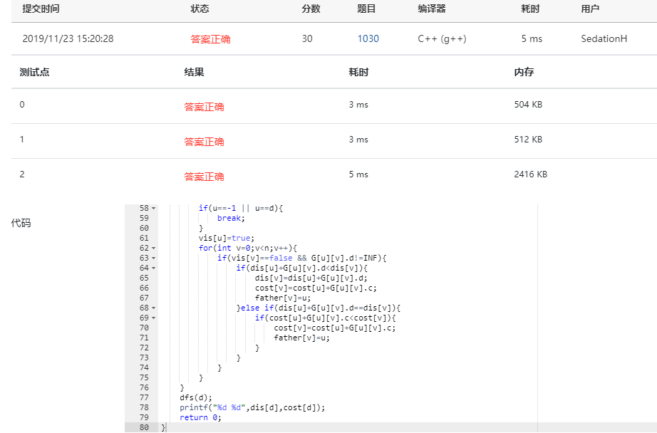

题目
Travel Plan
https://pintia.cn/problem-sets/994805342720868352/problems/994805464397627392
分析

一次AC，哈哈，非常开心，让我对自己的学习产生了点信心，前面真是被虐的太难受了,不扯了，开始分析
题目描述是个旅行计划，单源最短路问题，除了dis外，还要维护一个cost来记录最小花费，其优先级为
- 距离
- 花费
正常dijkstra即可，过程中记录father，用来保存最小路上每个节点的上一个位置，用一维即可，数据保证在经过cost优化后，结果是唯一的
dfs father数组，其中利用了一个技巧，感觉是从树的前中后序遍历中感受到的，先dfs，再输出，程序自动模拟了栈的结构，美滋滋。
代码
#include<iostream>
#include<cstdio>
#include<algorithm>
#include<vector>
using namespace std;
const int maxn=510;
const int INF=0x3f3f3f3f;
int n,m,s,d;
struct Node{
int d,c;
}G[maxn][maxn];
bool vis[maxn];
int dis[maxn],cost[maxn];
int father[maxn];
void dfs(int v){
if(v==s){
printf("%d ",s);
return ;
}
dfs(father[v]);
printf("%d ",v);
}
int main(){
scanf("%d%d%d%d",&n,&m,&s,&d);
for(int i=0;i<n;i++){
for(int j=0;j<n;j++){
G[i][j].c=INF;
G[i][j].d=INF;
}
dis[i]=cost[i]=INF;
}
int a,b,c,e;
for(int i=0;i<m;i++){
scanf("%d%d%d%d",&a,&b,&c,&e);
G[a][b].d=G[b][a].d=c;
G[a][b].c=G[b][a].c=e;
}
dis[s]=cost[s]=0;
for(int i=0;i<n;i++){
int u=-1,minDis=INF,minCost=INF;
for(int j=0;j<n;j++){
if(vis[j]==false){
if(dis[j]<minDis){
minDis=dis[j];
minCost=cost[j];
u=j;
}else if(dis[j]==minDis && minDis!=INF && cost[j]<minCost){
minDis=dis[j];
minCost=cost[j];
u=j;
}
}
}
if(u==-1 || u==d){
break;
}
vis[u]=true;
for(int v=0;v<n;v++){
if(vis[v]==false && G[u][v].d!=INF){
if(dis[u]+G[u][v].d<dis[v]){
dis[v]=dis[u]+G[u][v].d;
cost[v]=cost[u]+G[u][v].c;
father[v]=u;
}else if(dis[u]+G[u][v].d==dis[v]){
if(cost[u]+G[u][v].c<cost[v]){
cost[v]=cost[u]+G[u][v].c;
father[v]=u;
}
}
}
}
}
dfs(d);
printf("%d %d",dis[d],cost[d]);
return 0;
}
|